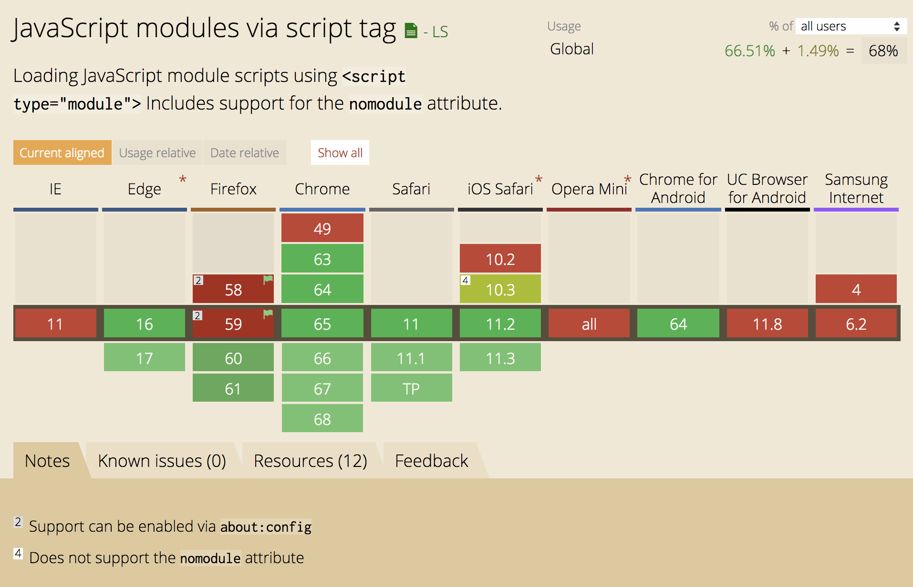
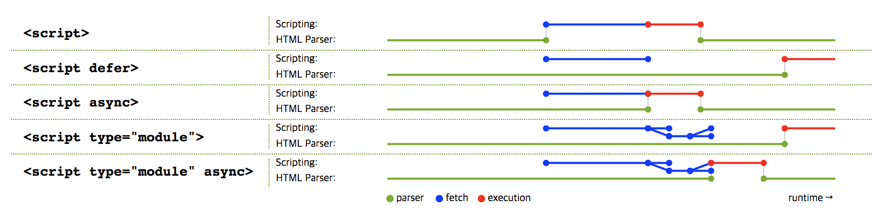
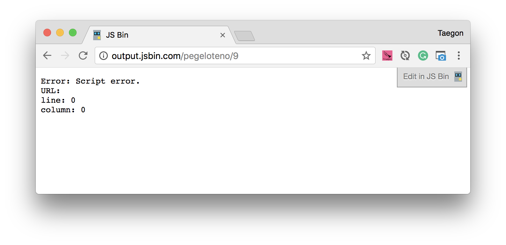
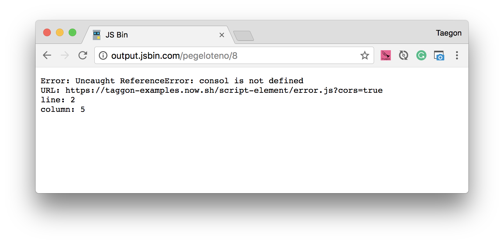
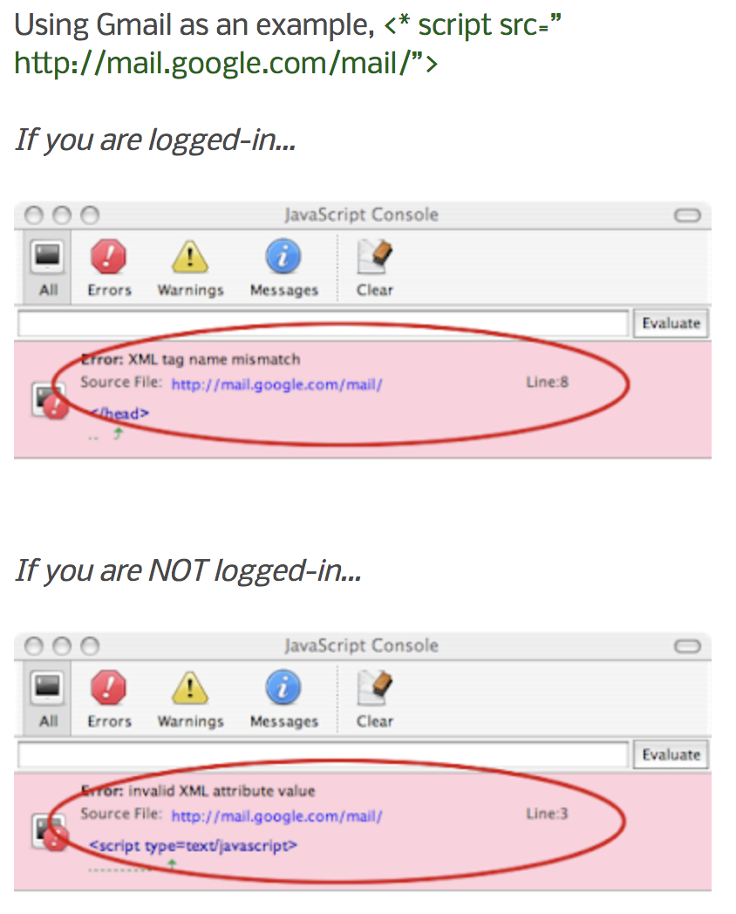

<!DOCTYPE html>
<html>
<head><meta name="generator" content="Hexo 3.8.0">
    <meta charset="utf-8">
    
    <title>Javascript Attributes | J Dev</title>
    <meta name="viewport" content="width=device-width, initial-scale=1, maximum-scale=1">
    
        <meta name="keywords" content="js">
    
    <meta name="description" content="꼼꼼히 살펴보는 SCRIPT 엘리먼트아마도 &amp;lt;script&amp;gt;는 자바스크립트를 공부할 때 가장 먼저 배우는 HTML 엘리먼트일 것이다. 속성이 많지도 않고 심지어 아무런 속성을 입력하지 않아도 유효하고 잘 동작하는 엘리먼트라서 지나치기 쉽다. 하지만 자바스크립트 실행에 있어서는 어쩌면 가장 중요한 엘리먼트이기에 한 번쯤은 제대로 꼼꼼히 살펴보는 게">
<meta name="keywords" content="js">
<meta property="og:type" content="article">
<meta property="og:title" content="Javascript Attributes">
<meta property="og:url" content="http://woonyzzang.github.com/2019/09/22/javascript-attributes/index.html">
<meta property="og:site_name" content="J Dev">
<meta property="og:description" content="꼼꼼히 살펴보는 SCRIPT 엘리먼트아마도 &amp;lt;script&amp;gt;는 자바스크립트를 공부할 때 가장 먼저 배우는 HTML 엘리먼트일 것이다. 속성이 많지도 않고 심지어 아무런 속성을 입력하지 않아도 유효하고 잘 동작하는 엘리먼트라서 지나치기 쉽다. 하지만 자바스크립트 실행에 있어서는 어쩌면 가장 중요한 엘리먼트이기에 한 번쯤은 제대로 꼼꼼히 살펴보는 게">
<meta property="og:locale" content="en">
<meta property="og:image" content="http://woonyzzang.github.com/2019/09/22/javascript-attributes/javascript-attributes_1.png">
<meta property="og:updated_time" content="2019-09-22T12:08:49.516Z">
<meta name="twitter:card" content="summary">
<meta name="twitter:title" content="Javascript Attributes">
<meta name="twitter:description" content="꼼꼼히 살펴보는 SCRIPT 엘리먼트아마도 &amp;lt;script&amp;gt;는 자바스크립트를 공부할 때 가장 먼저 배우는 HTML 엘리먼트일 것이다. 속성이 많지도 않고 심지어 아무런 속성을 입력하지 않아도 유효하고 잘 동작하는 엘리먼트라서 지나치기 쉽다. 하지만 자바스크립트 실행에 있어서는 어쩌면 가장 중요한 엘리먼트이기에 한 번쯤은 제대로 꼼꼼히 살펴보는 게">
<meta name="twitter:image" content="http://woonyzzang.github.com/2019/09/22/javascript-attributes/javascript-attributes_1.png">
    
    <link rel="canonical" href="http://woonyzzang.github.com/2019/09/22/javascript-attributes/">

    

    
        <link rel="icon" href="/images/favicon.png">
    

    <link rel="stylesheet" href="/libs/font-awesome/css/font-awesome.min.css">
    <link rel="stylesheet" href="/libs/titillium-web/styles.css">
    <link rel="stylesheet" href="/libs/source-code-pro/styles.css">

    <link rel="stylesheet" href="/css/style.css">

    <script src="/libs/jquery/2.0.3/jquery.min.js"></script>
    
    
        <link rel="stylesheet" href="/libs/lightgallery/css/lightgallery.min.css">
    
    
    

</head>
</html>
<body>
    <div id="wrap">
        <header id="header">
    <div id="header-outer" class="outer">
        <div class="container">
            <div class="container-inner">
                <div id="header-title">
                    <h1 class="logo-wrap">
                        <a href="/" class="logo"></a>
                    </h1>
                    
                        <h2 class="subtitle-wrap">
                            <p class="subtitle">Web Development Story Blog</p>
                        </h2>
                    
                </div>
                <div id="header-inner" class="nav-container">
                    <a id="main-nav-toggle" class="nav-icon fa fa-bars"></a>
                    <div class="nav-container-inner">
                        <ul id="main-nav">
                            
                                <li class="main-nav-list-item">
                                    <a class="main-nav-list-link" href="/">Home</a>
                                </li>
                            
                                        <ul class="main-nav-list"><li class="main-nav-list-item"><a class="main-nav-list-link" href="/categories/App/">App</a><ul class="main-nav-list-child"><li class="main-nav-list-item"><a class="main-nav-list-link" href="/categories/App/Ionic/">Ionic</a></li></ul></li><li class="main-nav-list-item"><a class="main-nav-list-link" href="/categories/Editor/">Editor</a><ul class="main-nav-list-child"><li class="main-nav-list-item"><a class="main-nav-list-link" href="/categories/Editor/SublimeText/">SublimeText</a></li><li class="main-nav-list-item"><a class="main-nav-list-link" href="/categories/Editor/Visualstudio/">Visualstudio</a></li><li class="main-nav-list-item"><a class="main-nav-list-link" href="/categories/Editor/Webstorm/">Webstorm</a></li></ul></li><li class="main-nav-list-item"><a class="main-nav-list-link" href="/categories/Etc/">Etc</a><ul class="main-nav-list-child"><li class="main-nav-list-item"><a class="main-nav-list-link" href="/categories/Etc/Log/">Log</a></li></ul></li><li class="main-nav-list-item"><a class="main-nav-list-link" href="/categories/FrontEnd/">FrontEnd</a><ul class="main-nav-list-child"><li class="main-nav-list-item"><a class="main-nav-list-link" href="/categories/FrontEnd/Angular-js/">Angular.js</a></li><li class="main-nav-list-item"><a class="main-nav-list-link" href="/categories/FrontEnd/Backbone-js/">Backbone.js</a></li><li class="main-nav-list-item"><a class="main-nav-list-link" href="/categories/FrontEnd/D3-js/">D3.js</a></li><li class="main-nav-list-item"><a class="main-nav-list-link" href="/categories/FrontEnd/Javascript-js/">Javascript.js</a></li><li class="main-nav-list-item"><a class="main-nav-list-link" href="/categories/FrontEnd/Node-js/">Node.js</a></li><li class="main-nav-list-item"><a class="main-nav-list-link" href="/categories/FrontEnd/React-js/">React.js</a></li><li class="main-nav-list-item"><a class="main-nav-list-link" href="/categories/FrontEnd/Require-js/">Require.js</a></li><li class="main-nav-list-item"><a class="main-nav-list-link" href="/categories/FrontEnd/Webpack/">Webpack</a></li><li class="main-nav-list-item"><a class="main-nav-list-link" href="/categories/FrontEnd/jQuery/">jQuery</a></li></ul></li><li class="main-nav-list-item"><a class="main-nav-list-link" href="/categories/OS/">OS</a><ul class="main-nav-list-child"><li class="main-nav-list-item"><a class="main-nav-list-link" href="/categories/OS/CentOS/">CentOS</a></li><li class="main-nav-list-item"><a class="main-nav-list-link" href="/categories/OS/Mac/">Mac</a></li><li class="main-nav-list-item"><a class="main-nav-list-link" href="/categories/OS/Ubuntu/">Ubuntu</a></li><li class="main-nav-list-item"><a class="main-nav-list-link" href="/categories/OS/Windows/">Windows</a></li></ul></li><li class="main-nav-list-item"><a class="main-nav-list-link" href="/categories/Server/">Server</a><ul class="main-nav-list-child"><li class="main-nav-list-item"><a class="main-nav-list-link" href="/categories/Server/ASP/">ASP</a></li><li class="main-nav-list-item"><a class="main-nav-list-link" href="/categories/Server/AWS/">AWS</a></li><li class="main-nav-list-item"><a class="main-nav-list-link" href="/categories/Server/Docker/">Docker</a></li><li class="main-nav-list-item"><a class="main-nav-list-link" href="/categories/Server/Gitlab/">Gitlab</a></li></ul></li><li class="main-nav-list-item"><a class="main-nav-list-link" href="/categories/Tools/">Tools</a><ul class="main-nav-list-child"><li class="main-nav-list-item"><a class="main-nav-list-link" href="/categories/Tools/APMSETUP/">APMSETUP</a></li><li class="main-nav-list-item"><a class="main-nav-list-link" href="/categories/Tools/Fiddler/">Fiddler</a></li><li class="main-nav-list-item"><a class="main-nav-list-link" href="/categories/Tools/OpenSSl/">OpenSSl</a></li><li class="main-nav-list-item"><a class="main-nav-list-link" href="/categories/Tools/VMware/">VMware</a></li></ul></li><li class="main-nav-list-item"><a class="main-nav-list-link" href="/categories/Web/">Web</a><ul class="main-nav-list-child"><li class="main-nav-list-item"><a class="main-nav-list-link" href="/categories/Web/CSS/">CSS</a></li><li class="main-nav-list-item"><a class="main-nav-list-link" href="/categories/Web/Descktop/">Descktop</a></li><li class="main-nav-list-item"><a class="main-nav-list-link" href="/categories/Web/HTML/">HTML</a></li><li class="main-nav-list-item"><a class="main-nav-list-link" href="/categories/Web/Mobile/">Mobile</a></li><li class="main-nav-list-item"><a class="main-nav-list-link" href="/categories/Web/Others/">Others</a></li></ul></li></ul>
                                    
                        </ul>
                        <nav id="sub-nav">
                            <div id="search-form-wrap">

    <form class="search-form">
        <input type="text" class="ins-search-input search-form-input" placeholder="Search">
        <button type="submit" class="search-form-submit"></button>
    </form>
    <div class="ins-search">
    <div class="ins-search-mask"></div>
    <div class="ins-search-container">
        <div class="ins-input-wrapper">
            <input type="text" class="ins-search-input" placeholder="Type something...">
            <span class="ins-close ins-selectable"><i class="fa fa-times-circle"></i></span>
        </div>
        <div class="ins-section-wrapper">
            <div class="ins-section-container"></div>
        </div>
    </div>
</div>
<script>
(function (window) {
    var INSIGHT_CONFIG = {
        TRANSLATION: {
            POSTS: 'Posts',
            PAGES: 'Pages',
            CATEGORIES: 'Categories',
            TAGS: 'Tags',
            UNTITLED: '(Untitled)',
        },
        ROOT_URL: '/',
        CONTENT_URL: '/content.json',
    };
    window.INSIGHT_CONFIG = INSIGHT_CONFIG;
})(window);
</script>
<script src="/js/insight.js"></script>

</div>
                        </nav>
                    </div>
                </div>
            </div>
        </div>
    </div>
</header>
        <div class="container">
            <div class="main-body container-inner">
                <div class="main-body-inner">
                    <section id="main">
                        <div class="main-body-header">
    <h1 class="header">
    
    <a class="page-title-link" href="/categories/FrontEnd/">FrontEnd</a><i class="icon fa fa-angle-right"></i><a class="page-title-link" href="/categories/FrontEnd/Javascript-js/">Javascript.js</a>
    </h1>
</div>
                        <div class="main-body-content">
                            <article id="post-javascript-attributes" class="article article-single article-type-post" itemscope="" itemprop="blogPost">
    <div class="article-inner">
        
            <header class="article-header">
                
    
        <h1 class="article-title" itemprop="name">
        Javascript Attributes
        </h1>
    

            </header>
        
        
            <div class="article-subtitle">
                <a href="/2019/09/22/javascript-attributes/" class="article-date">
    <time datetime="2019-09-22T12:07:39.000Z" itemprop="datePublished">2019-09-22</time>
</a>
                
    <ul class="article-tag-list"><li class="article-tag-list-item"><a class="article-tag-list-link" href="/tags/js/">js</a></li></ul>

            </div>
        
        
        <div class="article-entry" itemprop="articleBody">
            <h3 id="꼼꼼히-살펴보는-SCRIPT-엘리먼트"><a href="#꼼꼼히-살펴보는-SCRIPT-엘리먼트" class="headerlink" title="꼼꼼히 살펴보는 SCRIPT 엘리먼트"></a>꼼꼼히 살펴보는 SCRIPT 엘리먼트</h3><p>아마도 <code>&lt;script&gt;</code>는 자바스크립트를 공부할 때 가장 먼저 배우는 HTML 엘리먼트일 것이다. 속성이 많지도 않고 심지어 아무런 속성을 입력하지 않아도 유효하고 잘 동작하는 엘리먼트라서 지나치기 쉽다. 하지만 자바스크립트 실행에 있어서는 어쩌면 가장 중요한 엘리먼트이기에 한 번쯤은 제대로 꼼꼼히 살펴보는 게 좋을 것이다.</p>
<p>이 글은 지속적으로 업데이트되는 Living Standard 문서에 기초하고 있으므로 2014년에 발표된 HTML5 권고안에 포함되지 않은 내용도 있다. 이런 경우에는 별도로 관련 표기를 해두었으니 참고하기 바란다.</p>
<h3 id="스크립트-엘리먼트"><a href="#스크립트-엘리먼트" class="headerlink" title="스크립트 엘리먼트"></a>스크립트 엘리먼트</h3><p>스크립트 엘리먼트는 <code>&lt;script&gt;</code>로 시작하고 <code>&lt;/script&gt;</code>로 끝난다. 다른 HTML 엘리먼트와 마찬가지로 엘리먼트 이름의 대소문자를 구분하지 않고, 고유한 기능이 있는 다양한 속성을 사용할 수 있다. 필수 속성이 없기 때문에 아무런 속성을 설정하지 않고도 사용할 수 있다.</p>
<p>아무런 속성을 사용하지 않을 때는 보통 엘리먼트 내부에 스크립트 컨텐츠를 작성한다.  명세에서는 스크립트 언어가 자바스크립트라고 가정하고 있으며 다른 언어의 지원은 (적어도 현재까지는) <a href="https://html.spec.whatwg.org/multipage/scripting.html#scriptingLanguages" target="_blank" rel="noopener">명세와 충돌할 것</a>이라 선언하고 있다.</p>
<blockquote>
<p>… implementing other languages is in conflict with this standard, given the processing model defined for the script element.</p>
<p>“스크립트 엘리먼트에 정의된 처리 모델을 고려해 볼 때, (자바스크립트 이외의) 다른 언어의 구현은 이 표준과 충돌할 것이다.”</p>
</blockquote>
<p>IE10까지만 해도 현재는 폐지된 language 속성을 사용해서 VBScript를 스크립트 언어로 사용할 수 있었는데 이 방법이 <a href="https://docs.microsoft.com/en-us/previous-versions/windows/internet-explorer/ie-developer/compatibility/dn384057(v=vs.85" target="_blank" rel="noopener">IE11부터는 공식적으로 지원이 중단</a>)되었기 때문에 주요 브라우저의 최신 버전을 기준으로 했을 때 자바스크립트 외의 스크립트 언어를 네이티브로 지원하는 브라우저는 없다. 하지만 호환성을 위해 IE11에서도 다음과 같은 헤더를 통해 IE10 모드를 켜두면 VBScript를 사용할 수 있다고 한다.</p>
<figure class="highlight html"><table><tr><td class="gutter"><pre><span class="line">1</span><br></pre></td><td class="code"><pre><span class="line"><span class="tag">&lt;<span class="name">meta</span> <span class="attr">http-equiv</span>=<span class="string">"x-ua-compatible"</span> <span class="attr">content</span>=<span class="string">"IE=10"</span>&gt;</span></span><br></pre></td></tr></table></figure>
<h3 id="스크립트-컨텐츠"><a href="#스크립트-컨텐츠" class="headerlink" title="스크립트 컨텐츠"></a>스크립트 컨텐츠</h3><p>스크립트 콘텐츠에는 유니코드 문자를 모두 사용할 수 있다. 단, 다음 세 가지 항목의 텍스트는 포함할 수 없다(<a href="https://html.spec.whatwg.org/multipage/scripting.html#restrictions-for-contents-of-script-elements" target="_blank" rel="noopener">관련 명세</a>).</p>
<ul>
<li>여는 주석 &lt;!–</li>
<li>닫는 주석 –&gt;</li>
<li>여는 스크립트 태그 &lt;script</li>
</ul>
<p>따라서 다음과 같은 스크립트는 유효하지 않은 것으로 인식한다.</p>
<figure class="highlight javascript"><table><tr><td class="gutter"><pre><span class="line">1</span><br><span class="line">2</span><br><span class="line">3</span><br></pre></td><td class="code"><pre><span class="line"><span class="keyword">var</span> example = <span class="string">'문제 있는 문자열: &lt;!-- &lt;script&gt;'</span>;</span><br><span class="line"></span><br><span class="line"><span class="built_in">console</span>.log(example);</span><br></pre></td></tr></table></figure>
<p>하위 호환성 문제때문에 스크립트 엘리먼트 내부에 있는 <code>&lt;!--</code>와 <code>&lt;script</code>는 항상 짝이 맞아야 파서가 정확하게 닫는 태그를 인식할 수 있다. 위 예제에서는 <code>&lt;script</code>는 두 번 나타난 반면 <code>&lt;/script&gt;</code>는 한 번 밖에 나타나지 않았기 때문에 <code>&lt;/script&gt;</code>는 자바스크립트 코드의 일부인 것처럼 취급된다. 물론 올바르지 않은 코드라서 자바스크립트도 실행되지 않는다. 이 문제를 해결하는 가장 쉬운 방법은 <code>&lt;!--</code>와 <code>&lt;script&gt;</code> 텍스트를 각각 <code>&lt;\!--</code>와 <code>&lt;\script&gt;</code>로 이스케이프 처리를 하는 것이다.</p>
<p>마찬가지로 다음과 같이 조건 식에 나타나는 것도 주의해야 한다.</p>
<figure class="highlight javascript"><table><tr><td class="gutter"><pre><span class="line">1</span><br><span class="line">2</span><br><span class="line">3</span><br><span class="line">4</span><br><span class="line">5</span><br><span class="line">6</span><br><span class="line">7</span><br><span class="line">8</span><br><span class="line">9</span><br></pre></td><td class="code"><pre><span class="line"><span class="comment">// 문제가 발생함</span></span><br><span class="line"><span class="keyword">if</span> (x&lt;!--y) &#123; ... &#125;</span><br><span class="line"><span class="keyword">if</span> ( player&lt;script ) &#123; ... &#125;</span><br><span class="line"></span><br><span class="line"><span class="comment">// 문제가 발생하지 않음</span></span><br><span class="line"><span class="keyword">if</span> (x &lt; !--y) &#123; ... &#125;</span><br><span class="line"><span class="keyword">if</span> (!--y &gt; x ) &#123; ... &#125;</span><br><span class="line"><span class="keyword">if</span> (player &lt; script)&#123; ... &#125;</span><br><span class="line"><span class="keyword">if</span> (script &gt; player)&#123; ... &#125;</span><br></pre></td></tr></table></figure>
<p>역시 하위호환성 때문에 스크립트 컨텐츠에 있는 <code>&lt;!--</code> 기호는 한 줄 주석 <code>//</code>과 같이 취급된다. 그래서 다음과 같은 올바르지 않은 자바스크립트 코드도 실행할 수 있다.</p>
<figure class="highlight javascript"><table><tr><td class="gutter"><pre><span class="line">1</span><br><span class="line">2</span><br><span class="line">3</span><br><span class="line">4</span><br></pre></td><td class="code"><pre><span class="line"><span class="keyword">var</span> a = <span class="number">10</span>, b = <span class="number">20</span>;</span><br><span class="line">&lt;!-- a = <span class="number">30</span>; 실행되지 않는다.</span><br><span class="line"></span><br><span class="line"><span class="built_in">console</span>.log( a + b );</span><br></pre></td></tr></table></figure>
<p>여기서 설명한 스크립트 컨텐츠의 괴상한 특성은 HTML 문서에 삽입된 스크립트 엘리먼트에 텍스트 노드로서 추가한 컨텐츠일때만 동작한다. src 속성을 사용해 외부에서 호출하는 자바스크립트 코드에는 적용되지 않으므로 주의하자.</p>
<hr>
<h3 id="src-속성"><a href="#src-속성" class="headerlink" title="src 속성"></a>src 속성</h3><p>스크립트 파일을 외부에서 불러올 때 사용한다. 이 속성에 유효한 URL을 입력하면 외부의 스크립트를 불러들여서 실행한다. 불러와서 처리하는 방식은 <code>type</code> 속성의 값에 따라 달라질 수 있는데 이 부분은 잠시 뒤에 다루겠다.</p>
<p>src 속성이 설정되어 있을 때 스크립트의 컨텐츠, 다시 말해 <code>&lt;script&gt;</code>와 <code>&lt;/script&gt;</code> 사이에 나타나는 텍스트 데이터에는 src가 가리키는 스크립트에 관한 설명만 추가할 수 있다. 입력 가능한 데이터는 공백(탭, 스페이스, 줄바꿈)을 포함하여 자바스크립트의 블럭 주석(<code>/* ... */</code>) 또는 한 줄 주석(<code>//</code>) 뿐이다. 명세 문서에서 예제를 가져오면 다음과 같다.</p>
<figure class="highlight javascript"><table><tr><td class="gutter"><pre><span class="line">1</span><br><span class="line">2</span><br><span class="line">3</span><br><span class="line">4</span><br><span class="line">5</span><br><span class="line">6</span><br><span class="line">7</span><br></pre></td><td class="code"><pre><span class="line">&lt;script src=<span class="string">"cool-effects.js"</span>&gt;</span><br><span class="line"><span class="comment">// 새로운 인스턴스 생성:</span></span><br><span class="line"><span class="comment">// var e = new Effect();</span></span><br><span class="line"><span class="comment">// .play를 사용해서 효과를 시작하고 .stop을 사용해서 중단한다.</span></span><br><span class="line"><span class="comment">// e.play();</span></span><br><span class="line"><span class="comment">// e.stop();</span></span><br><span class="line">&lt;<span class="regexp">/script&gt;</span></span><br></pre></td></tr></table></figure>
<p>다만 명세에서 정한 대로 사용하지 않고 주석 외의 문자열, 예를 들어 자바스크립트 코드를 입력한다고 해서 문제가 발생하지는 않는다. 그저 무시될 뿐이다. 웹 브라우저는 src 속성에 유효한 URL이 입력되어 있을 경우 그를 우선시한다.</p>
<hr>
<h3 id="type-속성"><a href="#type-속성" class="headerlink" title="type 속성"></a>type 속성</h3><p>스크립트의 종류를 설정할 수 있다. 사실상 지원하는 언어는 자바스크립트 뿐이라 생략할 수 있고, 이 경우 <code>text/javascript</code>가 사용된다. 그 외에도 <code>application/javascript</code>, <code>application/ecmascript</code> 등 사용할 수 있는 값은 많지만 브라우저에 따라 지원하지 않는 경우도 있으므로 표준인 <code>text/javascript</code>를 사용하는 편이 좋다. 또한 웹 서버에서 스크립트 파일을 보내줄 때는 반드시 <code>text/javascript</code>를 MIME 타입을 <a href="https://html.spec.whatwg.org/multipage/scripting.html#scriptingLanguages" target="_blank" rel="noopener">사용해야 한다</a>고 정하고 있다.</p>
<blockquote>
<p>Servers should use text/javascript for JavaScript resources. Servers should not use other JavaScript MIME types for JavaScript resources, and must not use non-JavaScript MIME types.</p>
</blockquote>
<p>자바스크립트가 아닌 다른 타입을 일부러 설정하는 경우도 있다. 이 경우엔 당연하게도 해당 코드를 자바스크립트로 인식하지 않으며 따라서 실행하지도 않고 스크립트 엘리먼트 안의 컨텐츠는 단순한 문자열 데이터 블럭이 된다. 예를 들어 Backbone 프레임워크에서는 다음과 같이 스크립트 엘리먼트에 템플릿을 설정하기도 했다(출처: <a href="https://www.sitepoint.com/backbone-basics-models-views-collections-templates/#rendering-data-with-views-templates" target="_blank" rel="noopener">Sitepoint</a>).</p>
<figure class="highlight javascript"><table><tr><td class="gutter"><pre><span class="line">1</span><br><span class="line">2</span><br><span class="line">3</span><br><span class="line">4</span><br><span class="line">5</span><br></pre></td><td class="code"><pre><span class="line">&lt;script type=<span class="string">"text/template"</span> id=<span class="string">"surfboard-template"</span>&gt;</span><br><span class="line">    &lt;td&gt;<span class="xml"><span class="tag">&lt;<span class="name">%=</span> <span class="attr">manufacturer</span> %&gt;</span><span class="tag">&lt;/<span class="name">td</span>&gt;</span></span></span><br><span class="line">    &lt;td&gt;<span class="xml"><span class="tag">&lt;<span class="name">%=</span> <span class="attr">model</span> %&gt;</span><span class="tag">&lt;/<span class="name">td</span>&gt;</span></span></span><br><span class="line">    &lt;td&gt;<span class="xml"><span class="tag">&lt;<span class="name">%=</span> <span class="attr">stock</span> %&gt;</span><span class="tag">&lt;/<span class="name">td</span>&gt;</span></span></span><br><span class="line">&lt;<span class="regexp">/script&gt;</span></span><br></pre></td></tr></table></figure>
<p>참고로 HTML5에는 이와 같은 용도를 위해 <a href="https://www.w3.org/TR/html50/scripting-1.html#the-template-element" target="_blank" rel="noopener"><template> 엘리먼트</template></a>가 마련되어 있다.</p>
<p>HTML5 명세에는 없지만 Living Standard 문서에 기술되어 있고, 최근 브라우저에서 새롭게 지원하기 시작한 타입으로는 module이 있다(대소문자 구분하지 않음).</p>
<p>type 속성이 module로 설정되면 웹 브라우저는 스크립트를 module script로서 다루게 된다. 이 모드와 구분하기 위해 전통적인 방식으로 다루는 스크립트는 classic script라고 부른다.</p>
<p>모듈 스크립트(module script)가 되면 Node.js 혹은 Babel을 통해서나 가능하던 import 문법을 웹 브라우저에서 네이티브로 사용할 수 있다!  다음 예제를 보자(출처: <a href="https://jakearchibald.com/2017/es-modules-in-browsers/" target="_blank" rel="noopener">Jake Archibald의 블로그</a>)</p>
<figure class="highlight javascript"><table><tr><td class="gutter"><pre><span class="line">1</span><br><span class="line">2</span><br><span class="line">3</span><br><span class="line">4</span><br><span class="line">5</span><br></pre></td><td class="code"><pre><span class="line">&lt;script type=<span class="string">"module"</span>&gt;</span><br><span class="line"><span class="keyword">import</span> &#123;addTextToBody&#125; <span class="keyword">from</span> <span class="string">'./utils.js'</span>;</span><br><span class="line"></span><br><span class="line">addTextToBody(<span class="string">'Modules are pretty cool.'</span>);</span><br><span class="line">&lt;<span class="regexp">/script&gt;</span></span><br></pre></td></tr></table></figure>
<figure class="highlight javascript"><table><tr><td class="gutter"><pre><span class="line">1</span><br><span class="line">2</span><br><span class="line">3</span><br><span class="line">4</span><br><span class="line">5</span><br><span class="line">6</span><br><span class="line">7</span><br></pre></td><td class="code"><pre><span class="line"><span class="comment">// utils.js</span></span><br><span class="line"><span class="keyword">export</span> <span class="function"><span class="keyword">function</span> <span class="title">addTextToBody</span>(<span class="params">text</span>) </span>&#123;</span><br><span class="line">    <span class="keyword">const</span> div = <span class="built_in">document</span>.createElement(<span class="string">'div'</span>);</span><br><span class="line"></span><br><span class="line">    div.textContent = text;</span><br><span class="line">    <span class="built_in">document</span>.body.appendChild(div);</span><br><span class="line">&#125;</span><br></pre></td></tr></table></figure>
<p>ES6의 모듈이 동작하는 방식에 대해서는 스크립트 엘리먼트를 다루는 이 글의 주제를 벗어나므로 다루지 않겠지만, 아직 잘 모르고 있다면 모질라 기술 블로그의 “<a href="http://hacks.mozilla.or.kr/2016/05/es6-in-depth-modules/" target="_blank" rel="noopener">ES6 In Depth: 모듈(한국어)</a>“을 읽어보기 바란다.</p>
<p>모듈 타입의 스크립트는 다른 모듈(위 예제에서는 <strong>utils.js</strong>)을 불러올 때 비동기 방식으로 가져오는데, 스크립트를 다운로드 하는 방식에 대해서는 잠시 뒤에 다시 다루도록 하겠다.</p>
<p><code>module</code> 타입은 Edge, Chrome, Safari, iOS, Safari, Chrome for Android 등 주요 브라우저에서 지원하고 있다. 이 글을 쓰는 시점의 최신 버전인 Firefox 59에서도 이 타입을 지원하기는 하지만 about:config 설정에서 dom.moduleScripts.enabled항목을 설정해주어야 사용할 수 있다.  자세한 내용은 아래 이미지를 참고하고, 최신 상태를 확인하고 싶다면 <a href="https://caniuse.com/#feat=es6-module" target="_blank" rel="noopener">caniuse.com</a>에서 조회해보도록 하자.</p>
<p></p>
<hr>
<h3 id="nomodule-속성"><a href="#nomodule-속성" class="headerlink" title="nomodule 속성"></a>nomodule 속성</h3><p><code>type=&quot;module&quot;</code>을 지원하지 않는 브라우저에서 사용할 스크립트 파일을 따로 설정하는 불리언 속성이다.</p>
<figure class="highlight html"><table><tr><td class="gutter"><pre><span class="line">1</span><br><span class="line">2</span><br></pre></td><td class="code"><pre><span class="line"><span class="tag">&lt;<span class="name">script</span> <span class="attr">type</span>=<span class="string">"module"</span> <span class="attr">src</span>=<span class="string">"main.js"</span>&gt;</span><span class="undefined"></span><span class="tag">&lt;/<span class="name">script</span>&gt;</span></span><br><span class="line"><span class="tag">&lt;<span class="name">script</span> <span class="attr">nomodule</span> <span class="attr">src</span>=<span class="string">"main.fallback.js"</span>&gt;</span><span class="undefined"></span><span class="tag">&lt;/<span class="name">script</span>&gt;</span></span><br></pre></td></tr></table></figure>
<p>모듈 스크립트를 지원하지 않는 구식 브라우저에서는 <code>type=&quot;module&quot;</code>이 설정된 스크립트 엘리먼트의 src 속성을 무시하지만 두 번째 줄에 있는 src 속성은 자바스크립트 코드로서 다루게 될 것이다.</p>
<p>반면 모듈 스크립트를 지원하는 최신 브라우저에서는 <code>type=&quot;module&quot;</code>이 설정된 자바스크립트를 모듈로서 다루고 <code>nomodule</code>이 설정된 스크립트 엘리먼트를 무시한다.</p>
<hr>
<h3 id="async-defer-속성"><a href="#async-defer-속성" class="headerlink" title="async / defer 속성"></a>async / defer 속성</h3><p>스크립트를 비동기로 읽어들이고 싶을 때 사용하는 불리언 속성들이다. 기본적으로 스크립트 엘리먼트는 HTML 파서(parser)의 동작을 중단하고 스크립트를 다운로드 후 실행하는 이른바 블러킹 모드(blocking mode)로 동작한다. 여러 스크립트 엘리먼트가 있을 경우에도 실행 순서를 보장할 수 있다는 장점은 있지만, 스크립트 파일을 다운로드하는 동안에 파싱(parsing)이 중단되므로 웹 페이지의 성능을 저하시킨다.</p>
<p></p>
<p>그런데 <code>async</code> 또는 <code>defer</code> 속성을 사용하면 다운로드는 백그라운드에서 진행되고 스크립트를 실행하는 동안만 HTML 파싱을 중단하는 소위 <strong>non-blocking</strong> 모드로 동작한다. 따라서 웹 페이지는 두 속성을 사용하지 않았을 때보다 더 빠르게 표시될 것이다.</p>
<p>두 속성에는 두 가지 차이가 있다. 하나는 <code>defer</code>는 다운로드가 먼저 끝나더라도 파싱이 완료될 때까지 기다렸다가 스크립트를 실행하지만, <code>async</code>는 다운로드가 끝나면 바로 스크립트를 실행한다는 것이다. 나머지 하나는 <code>defer</code>는 두 속성 중 아무 것도 사용하지 않았을 때와 마찬가지로 실행 순서를 보장해주지만, <code>async</code>는 다운로드 받은 순서대로 실행되기 때문에 실행 순서가 스크립트 엘리먼트의 출현 순서와 다를 수 있다는 것이다.</p>
<p>구식 브라우저에서는 <code>defer</code>만 지원하기도 해서 다음과 같이 두 속성을 모두 적어두기도 한다.</p>
<figure class="highlight html"><table><tr><td class="gutter"><pre><span class="line">1</span><br></pre></td><td class="code"><pre><span class="line"><span class="tag">&lt;<span class="name">script</span> <span class="attr">defer</span> <span class="attr">async</span> <span class="attr">src</span>=<span class="string">"async.js"</span>&gt;</span><span class="undefined"></span><span class="tag">&lt;/<span class="name">script</span>&gt;</span></span><br></pre></td></tr></table></figure>
<p>위 예제와 같이 작성하면 <code>async</code>를 지원하는 최신 브라우저에서는 <code>async</code>가 <code>defer</code>에 우선하기 때문에 <code>async</code>의 특성을 따르고 구식 브라우저에서는 <code>defer</code>의 특성을 따른다.</p>
<p>모듈 스크립트에는 async만 사용할 수 있는데, async가 설정되어 있으면 관련 모듈의 다운로드가 끝난 후 바로 스크립트를 실행하지만 설정되어 있지 않으면 마치 defer처럼 웹 페이지 파싱이 끝날 때까지 기다렸다가 실행한다(위 이미지 참조).</p>
<hr>
<h3 id="crossorigin-속성"><a href="#crossorigin-속성" class="headerlink" title="crossorigin 속성"></a>crossorigin 속성</h3><p>현재 문서와 다른 호스트에서 스크립트를 불러올 때 해당 스크립트를 어떻게 다룰 것인지 설정하는 속성이며 사용할 수 있는 값으로는 <code>anonymous</code>와 <code>use-credentials</code>가 있다.</p>
<p><strong>window.onerror</strong>로 에러를 다루는 경우 <a href="https://bugzilla.mozilla.org/show_bug.cgi?id=363897" target="_blank" rel="noopener">보안상의 이유</a>때문에 출처가 같지 않은 곳에서 불러오는 스크립트에서 발생하는 에러는 그다지 도움이 되지 않는 정보만 전달된다. 다음의 예제를 통해 차이를 확인해보자.</p>
<p>두 예제 모두 에러가 발생하는 파일을 불러오고,  다음과 같은 코드를 사용해 window.error를 통해 에러를 #log 엘리먼트에 출력하도록 했다.</p>
<figure class="highlight html"><table><tr><td class="gutter"><pre><span class="line">1</span><br><span class="line">2</span><br><span class="line">3</span><br><span class="line">4</span><br><span class="line">5</span><br><span class="line">6</span><br><span class="line">7</span><br><span class="line">8</span><br><span class="line">9</span><br><span class="line">10</span><br><span class="line">11</span><br><span class="line">12</span><br></pre></td><td class="code"><pre><span class="line"><span class="tag">&lt;<span class="name">script</span>&gt;</span><span class="undefined"></span></span><br><span class="line"><span class="javascript"><span class="built_in">window</span>.onerror = <span class="function"><span class="keyword">function</span>(<span class="params">message, url, lineNum, columnNum, error</span>) </span>&#123;</span></span><br><span class="line"><span class="javascript">    <span class="keyword">var</span> log = <span class="built_in">document</span>.getElementById(<span class="string">'log'</span>);</span></span><br><span class="line"><span class="undefined"></span></span><br><span class="line"><span class="javascript">    log.innerText = <span class="string">''</span> +</span></span><br><span class="line"><span class="javascript">        <span class="string">'Error: '</span> + message + </span></span><br><span class="line"><span class="javascript">        <span class="string">'\nURL: '</span> + url +</span></span><br><span class="line"><span class="javascript">        <span class="string">'\nline: '</span> + lineNum +</span></span><br><span class="line"><span class="javascript">        <span class="string">'\ncolumn: '</span> + columnNum;</span></span><br><span class="line"><span class="undefined">&#125;</span></span><br><span class="line"><span class="undefined"></span><span class="tag">&lt;/<span class="name">script</span>&gt;</span></span><br><span class="line"><span class="tag">&lt;<span class="name">pre</span> <span class="attr">id</span>=<span class="string">"log"</span>&gt;</span><span class="tag">&lt;/<span class="name">pre</span>&gt;</span></span><br></pre></td></tr></table></figure>
<p>crossorigin 속성을 사용하지 않은 첫 번째 예제는 다음과 같이 화면에 나타난다. 보다시피 에러 내용도 명확하지 않고 에러가 발생한 위치도 알 수 없다.</p>
<p></p>
<p>반면, <code>crossorogin</code> 속성을 사용해서 스크립트를 불러온 두 번째 예제에서는 다음과 같이 에러 메시지 내용이 보다 세밀하게 나타난다.</p>
<p></p>
<p>앞서 말했듯이 이 같은 동작은 잠재적인 보안 문제때문이다. 악성 웹 사이트에서 onerror를 사용해 다른 사이트에 로그인이 되었는지 확인할 수 있었기 때문이다. 예를 들어 아무 사이트에서나 Gmail 스크립트를 불러오면 다음과 같이 사용자가 Gmail에 로그인했는지 여부를 알 수 있었다(출처: <a href="http://blog.jeremiahgrossman.com/2006/12/i-know-if-youre-logged-in-anywhere.html" target="_blank" rel="noopener">Jeremiah Grossman 블로그</a>).</p>
<p></p>
<p>따라서 이 동작은 window.onerror에 전달하는 정보에만 적용될 뿐 개발자 도구에는 적용되지 않는다. crossorigin 속성의 사용 여부와 상관없이 개발자 도구에서는 상세한 에러 정보가 표시된다.</p>
<p>모듈 모드에서는 crossorigin 속성의 값이 조금 다른 의미를 지닌다.  모듈 모드는 출처가 다른 스크립트를 <strong>항상 CORS 방식으로 불러온다.</strong> 즉, 다른 호스트에서 스크립트 파일을 불러오고 있는데 스크립트 파일을 보내주는 서버에서 CORS 헤더를 설정하지 않으면 스크립트가 실행되지 않는다.</p>
<p>기본적으로 일반 모드에서 스크립트를 불러올 때는 출처와 상관없이 쿠키 등의 인증 정보(credentials)가 서버에 전달되는데, 모듈 모드에서는 출처가 같지 않은 스크립트 파일을 불러올 때 쿠키 등의 민감한 정보를 보내지 않는다. 출처가 다른 경우에도 crossorigin 속성에 명시적으로 “use-credentials”를 설정하면 인증 정보를 서버로 전송한다. 코드로 표현해보면 다음과 같다(출처: <a href="https://jakearchibald.com/2017/es-modules-in-browsers/" target="_blank" rel="noopener">Jake Archibald의 블로그</a>).</p>
<figure class="highlight html"><table><tr><td class="gutter"><pre><span class="line">1</span><br><span class="line">2</span><br><span class="line">3</span><br><span class="line">4</span><br><span class="line">5</span><br><span class="line">6</span><br><span class="line">7</span><br><span class="line">8</span><br><span class="line">9</span><br><span class="line">10</span><br><span class="line">11</span><br><span class="line">12</span><br><span class="line">13</span><br><span class="line">14</span><br></pre></td><td class="code"><pre><span class="line"><span class="comment">&lt;!-- 인증 정보(쿠키 등) 보냄 --&gt;</span> </span><br><span class="line"><span class="tag">&lt;<span class="name">script</span> <span class="attr">src</span>=<span class="string">"1.js"</span>&gt;</span><span class="undefined"></span><span class="tag">&lt;/<span class="name">script</span>&gt;</span></span><br><span class="line"></span><br><span class="line"><span class="comment">&lt;!-- 인증 정보(쿠키 등) 보내지 않음 - 동일 출처 --&gt;</span> </span><br><span class="line"><span class="tag">&lt;<span class="name">script</span> <span class="attr">type</span>=<span class="string">"module"</span> <span class="attr">src</span>=<span class="string">"1.js?"</span>&gt;</span><span class="undefined"></span><span class="tag">&lt;/<span class="name">script</span>&gt;</span></span><br><span class="line"></span><br><span class="line"><span class="comment">&lt;!-- 인증 정보(쿠키 등) 보냄 - 동일 출처 --&gt;</span> </span><br><span class="line"><span class="tag">&lt;<span class="name">script</span> <span class="attr">type</span>=<span class="string">"module"</span> <span class="attr">crossorigin</span> <span class="attr">src</span>=<span class="string">"1.js"</span>&gt;</span><span class="undefined"></span><span class="tag">&lt;/<span class="name">script</span>&gt;</span></span><br><span class="line"></span><br><span class="line"><span class="comment">&lt;!-- 인증 정보(쿠키 등) 보내지 않음 - 동일 출처 아님 --&gt;</span> </span><br><span class="line"><span class="tag">&lt;<span class="name">script</span> <span class="attr">type</span>=<span class="string">"module"</span> <span class="attr">crossorigin</span> <span class="attr">src</span>=<span class="string">"http://다른_호스트/1.js"</span>&gt;</span><span class="undefined"></span><span class="tag">&lt;/<span class="name">script</span>&gt;</span></span><br><span class="line"></span><br><span class="line"><span class="comment">&lt;!-- 인증 정보(쿠키 등) 보냄 - 동일 출처 아님 --&gt;</span> </span><br><span class="line"><span class="tag">&lt;<span class="name">script</span> <span class="attr">type</span>=<span class="string">"module"</span> <span class="attr">crossorigin</span>=<span class="string">"use-credentials"</span> <span class="attr">src</span>=<span class="string">"http://다른_호스트/1.js"</span>&gt;</span><span class="undefined"></span><span class="tag">&lt;/<span class="name">script</span>&gt;</span></span><br></pre></td></tr></table></figure>
<p>주의할 점은 동일 출처가 아닌 상태에서 <code>use-credentials</code>를 사용할 때는 서버의 응답 헤더에 <code>Access-Control-Allow-Credentials: true</code>가 포함되어 있어야 한다는 것이다.</p>
<hr>
<h3 id="사라진-속성"><a href="#사라진-속성" class="headerlink" title="사라진 속성"></a>사라진 속성</h3><p>몇 해 전까지만 해도 스크립트 엘리먼트에 charset을 사용해서 스크립트 외부 파일의 문자셋을 정해주곤 했었다. 지금과는 달리 euc-kr로 인코딩된 웹 페이지가 많았는데 스크립트 파일은 utf-8로 작성된 경우 문자가 잘못 표기되는 것을 방지하기 위해서였다. 이 속성은 HTML5에서 더 이상 지원되지 않기 때문에 사용해서는 안되는 속성이지만, 사용하는 경우에도 utf-8만 지원한다(대소문자 구분 안함).</p>
<p>여담이지만 아직도 euc-kr, cp949, ksc5601(모두 사실상 같은 코드)과 같은 인코딩을 사용하는 웹 페이지가 있기는 하다(네이버 카페라거나 Naver Cafe 라거나…).</p>
<p>language 속성도 사용하면 안되는 속성이지만 사용할 경우에는 반드시 값이 “JavaScript”여야 한다(대소문자 구분안함).</p>
<h3 id="참조"><a href="#참조" class="headerlink" title="참조"></a>참조</h3><ul>
<li><a href="https://taegon.kim/archives/6804" target="_blank" rel="noopener">https://taegon.kim/archives/6804</a></li>
</ul>

        </div>
        <footer class="article-footer">
            


    <a data-url="http://woonyzzang.github.com/2019/09/22/javascript-attributes/" data-id="ck0uxw5kq004pj49k6wgbdb6o" class="article-share-link"><i class="fa fa-share"></i>Share</a>
<script>
    (function ($) {
        $('body').on('click', function() {
            $('.article-share-box.on').removeClass('on');
        }).on('click', '.article-share-link', function(e) {
            e.stopPropagation();

            var $this = $(this),
                url = $this.attr('data-url'),
                encodedUrl = encodeURIComponent(url),
                id = 'article-share-box-' + $this.attr('data-id'),
                offset = $this.offset(),
                box;

            if ($('#' + id).length) {
                box = $('#' + id);

                if (box.hasClass('on')){
                    box.removeClass('on');
                    return;
                }
            } else {
                var html = [
                    '<div id="' + id + '" class="article-share-box">',
                        '<input class="article-share-input" value="' + url + '">',
                        '<div class="article-share-links">',
                            '<a href="https://twitter.com/intent/tweet?url=' + encodedUrl + '" class="article-share-twitter" target="_blank" title="Twitter"></a>',
                            '<a href="https://www.facebook.com/sharer.php?u=' + encodedUrl + '" class="article-share-facebook" target="_blank" title="Facebook"></a>',
                            '<a href="http://pinterest.com/pin/create/button/?url=' + encodedUrl + '" class="article-share-pinterest" target="_blank" title="Pinterest"></a>',
                            '<a href="https://plus.google.com/share?url=' + encodedUrl + '" class="article-share-google" target="_blank" title="Google+"></a>',
                        '</div>',
                    '</div>'
                ].join('');

              box = $(html);

              $('body').append(box);
            }

            $('.article-share-box.on').hide();

            box.css({
                top: offset.top + 25,
                left: offset.left
            }).addClass('on');

        }).on('click', '.article-share-box', function (e) {
            e.stopPropagation();
        }).on('click', '.article-share-box-input', function () {
            $(this).select();
        }).on('click', '.article-share-box-link', function (e) {
            e.preventDefault();
            e.stopPropagation();

            window.open(this.href, 'article-share-box-window-' + Date.now(), 'width=500,height=450');
        });
    })(jQuery);
</script>

        </footer>
    </div>
</article>

    <section id="comments">
    
        
    <div id="disqus_thread">
        <noscript>Please enable JavaScript to view the <a href="//disqus.com/?ref_noscript">comments powered by Disqus.</a></noscript>
    </div>

    
    </section>


                        </div>
                    </section>
                    <aside id="sidebar">
    <a class="sidebar-toggle" title="Expand Sidebar"><i class="toggle icon"></i></a>
    <div class="sidebar-top">
        <p>follow:</p>
        <ul class="social-links">
            
                
                <li>
                    <a class="social-tooltip" title="github" href="https://github.com/woonyzzang/" target="_blank">
                        <i class="icon fa fa-github"></i>
                    </a>
                </li>
                
            
                
                <li>
                    <a class="social-tooltip" title="cloud" href="http://j-portfolio.herokuapp.com/" target="_blank">
                        <i class="icon fa fa-cloud"></i>
                    </a>
                </li>
                
            
                
                <li>
                    <a class="social-tooltip" title="jsfiddle" href="https://jsfiddle.net/user/woonyzzang/fiddles/" target="_blank">
                        <i class="icon fa fa-jsfiddle"></i>
                    </a>
                </li>
                
            
        </ul>
    </div>
    <!-- github card -->
    
    <div class="github-card" data-github="woonyzzang" data-width="100%" data-height="150" data-theme="default"></div>
    
    <script src="/libs/github-cards/widget.min.js"></script>
    <!-- //github card -->
    
        
<nav id="article-nav">
    
    
        <a href="/2019/09/22/chrome-webfont-cross-domain/" id="article-nav-older" class="article-nav-link-wrap">
        <strong class="article-nav-caption">older</strong>
        <p class="article-nav-title">[Chrome] Webfont Cross Domain</p>
        <i class="icon fa fa-chevron-left" id="icon-chevron-left"></i>
        </a>
    
</nav>

    
    <div class="widgets-container">
        
            
                
    <div class="widget-wrap widget-list">
        <h3 class="widget-title">categories</h3>
        <div class="widget">
            <ul class="category-list"><li class="category-list-item"><a class="category-list-link" href="/categories/App/">App</a><span class="category-list-count">6</span><ul class="category-list-child"><li class="category-list-item"><a class="category-list-link" href="/categories/App/Ionic/">Ionic</a><span class="category-list-count">6</span></li></ul></li><li class="category-list-item"><a class="category-list-link" href="/categories/Editor/">Editor</a><span class="category-list-count">10</span><ul class="category-list-child"><li class="category-list-item"><a class="category-list-link" href="/categories/Editor/SublimeText/">SublimeText</a><span class="category-list-count">3</span></li><li class="category-list-item"><a class="category-list-link" href="/categories/Editor/Visualstudio/">Visualstudio</a><span class="category-list-count">1</span></li><li class="category-list-item"><a class="category-list-link" href="/categories/Editor/Webstorm/">Webstorm</a><span class="category-list-count">6</span></li></ul></li><li class="category-list-item"><a class="category-list-link" href="/categories/Etc/">Etc</a><span class="category-list-count">2</span><ul class="category-list-child"><li class="category-list-item"><a class="category-list-link" href="/categories/Etc/Log/">Log</a><span class="category-list-count">2</span></li></ul></li><li class="category-list-item"><a class="category-list-link" href="/categories/FrontEnd/">FrontEnd</a><span class="category-list-count">58</span><ul class="category-list-child"><li class="category-list-item"><a class="category-list-link" href="/categories/FrontEnd/Angular-js/">Angular.js</a><span class="category-list-count">2</span></li><li class="category-list-item"><a class="category-list-link" href="/categories/FrontEnd/Backbone-js/">Backbone.js</a><span class="category-list-count">6</span></li><li class="category-list-item"><a class="category-list-link" href="/categories/FrontEnd/D3-js/">D3.js</a><span class="category-list-count">9</span></li><li class="category-list-item"><a class="category-list-link" href="/categories/FrontEnd/Javascript-js/">Javascript.js</a><span class="category-list-count">21</span></li><li class="category-list-item"><a class="category-list-link" href="/categories/FrontEnd/Node-js/">Node.js</a><span class="category-list-count">1</span></li><li class="category-list-item"><a class="category-list-link" href="/categories/FrontEnd/React-js/">React.js</a><span class="category-list-count">12</span></li><li class="category-list-item"><a class="category-list-link" href="/categories/FrontEnd/Require-js/">Require.js</a><span class="category-list-count">2</span></li><li class="category-list-item"><a class="category-list-link" href="/categories/FrontEnd/Webpack/">Webpack</a><span class="category-list-count">3</span></li><li class="category-list-item"><a class="category-list-link" href="/categories/FrontEnd/jQuery/">jQuery</a><span class="category-list-count">2</span></li></ul></li><li class="category-list-item"><a class="category-list-link" href="/categories/OS/">OS</a><span class="category-list-count">26</span><ul class="category-list-child"><li class="category-list-item"><a class="category-list-link" href="/categories/OS/CentOS/">CentOS</a><span class="category-list-count">7</span></li><li class="category-list-item"><a class="category-list-link" href="/categories/OS/Mac/">Mac</a><span class="category-list-count">5</span></li><li class="category-list-item"><a class="category-list-link" href="/categories/OS/Ubuntu/">Ubuntu</a><span class="category-list-count">4</span></li><li class="category-list-item"><a class="category-list-link" href="/categories/OS/Windows/">Windows</a><span class="category-list-count">10</span></li></ul></li><li class="category-list-item"><a class="category-list-link" href="/categories/Server/">Server</a><span class="category-list-count">12</span><ul class="category-list-child"><li class="category-list-item"><a class="category-list-link" href="/categories/Server/ASP/">ASP</a><span class="category-list-count">4</span></li><li class="category-list-item"><a class="category-list-link" href="/categories/Server/AWS/">AWS</a><span class="category-list-count">1</span></li><li class="category-list-item"><a class="category-list-link" href="/categories/Server/Docker/">Docker</a><span class="category-list-count">6</span></li><li class="category-list-item"><a class="category-list-link" href="/categories/Server/Gitlab/">Gitlab</a><span class="category-list-count">1</span></li></ul></li><li class="category-list-item"><a class="category-list-link" href="/categories/Tools/">Tools</a><span class="category-list-count">5</span><ul class="category-list-child"><li class="category-list-item"><a class="category-list-link" href="/categories/Tools/APMSETUP/">APMSETUP</a><span class="category-list-count">1</span></li><li class="category-list-item"><a class="category-list-link" href="/categories/Tools/Fiddler/">Fiddler</a><span class="category-list-count">2</span></li><li class="category-list-item"><a class="category-list-link" href="/categories/Tools/OpenSSl/">OpenSSl</a><span class="category-list-count">1</span></li><li class="category-list-item"><a class="category-list-link" href="/categories/Tools/VMware/">VMware</a><span class="category-list-count">1</span></li></ul></li><li class="category-list-item"><a class="category-list-link" href="/categories/Web/">Web</a><span class="category-list-count">18</span><ul class="category-list-child"><li class="category-list-item"><a class="category-list-link" href="/categories/Web/CSS/">CSS</a><span class="category-list-count">6</span></li><li class="category-list-item"><a class="category-list-link" href="/categories/Web/Descktop/">Descktop</a><span class="category-list-count">2</span></li><li class="category-list-item"><a class="category-list-link" href="/categories/Web/HTML/">HTML</a><span class="category-list-count">1</span></li><li class="category-list-item"><a class="category-list-link" href="/categories/Web/Mobile/">Mobile</a><span class="category-list-count">5</span></li><li class="category-list-item"><a class="category-list-link" href="/categories/Web/Others/">Others</a><span class="category-list-count">4</span></li></ul></li></ul>
        </div>
    </div>


            
                
    <div class="widget-wrap widget-list">
        <h3 class="widget-title">archives</h3>
        <div class="widget">
            <ul class="archive-list"><li class="archive-list-item"><a class="archive-list-link" href="/archives/2019/09/">September 2019</a><span class="archive-list-count">7</span></li><li class="archive-list-item"><a class="archive-list-link" href="/archives/2019/08/">August 2019</a><span class="archive-list-count">22</span></li><li class="archive-list-item"><a class="archive-list-link" href="/archives/2019/03/">March 2019</a><span class="archive-list-count">1</span></li><li class="archive-list-item"><a class="archive-list-link" href="/archives/2018/11/">November 2018</a><span class="archive-list-count">3</span></li><li class="archive-list-item"><a class="archive-list-link" href="/archives/2018/04/">April 2018</a><span class="archive-list-count">2</span></li><li class="archive-list-item"><a class="archive-list-link" href="/archives/2017/11/">November 2017</a><span class="archive-list-count">3</span></li><li class="archive-list-item"><a class="archive-list-link" href="/archives/2017/10/">October 2017</a><span class="archive-list-count">4</span></li><li class="archive-list-item"><a class="archive-list-link" href="/archives/2017/08/">August 2017</a><span class="archive-list-count">1</span></li><li class="archive-list-item"><a class="archive-list-link" href="/archives/2017/07/">July 2017</a><span class="archive-list-count">5</span></li><li class="archive-list-item"><a class="archive-list-link" href="/archives/2017/06/">June 2017</a><span class="archive-list-count">3</span></li><li class="archive-list-item"><a class="archive-list-link" href="/archives/2017/05/">May 2017</a><span class="archive-list-count">33</span></li><li class="archive-list-item"><a class="archive-list-link" href="/archives/2017/04/">April 2017</a><span class="archive-list-count">10</span></li><li class="archive-list-item"><a class="archive-list-link" href="/archives/2017/03/">March 2017</a><span class="archive-list-count">25</span></li><li class="archive-list-item"><a class="archive-list-link" href="/archives/2017/02/">February 2017</a><span class="archive-list-count">19</span></li></ul>
        </div>
    </div>


            
                
    <div class="widget-wrap widget-float">
        <h3 class="widget-title">tag cloud</h3>
        <div class="widget tagcloud">
            <a href="/tags/angular-v1/" style="font-size: 11px;">angular v1</a> <a href="/tags/apmsetup/" style="font-size: 10px;">apmsetup</a> <a href="/tags/asp/" style="font-size: 13px;">asp</a> <a href="/tags/aws/" style="font-size: 10px;">aws</a> <a href="/tags/backbone/" style="font-size: 15px;">backbone</a> <a href="/tags/centos/" style="font-size: 16px;">centos</a> <a href="/tags/chrome/" style="font-size: 12px;">chrome</a> <a href="/tags/css/" style="font-size: 15px;">css</a> <a href="/tags/css3/" style="font-size: 15px;">css3</a> <a href="/tags/d3/" style="font-size: 17px;">d3</a> <a href="/tags/descktop/" style="font-size: 11px;">descktop</a> <a href="/tags/docker/" style="font-size: 15px;">docker</a> <a href="/tags/es6/" style="font-size: 13px;">es6</a> <a href="/tags/fiddler/" style="font-size: 11px;">fiddler</a> <a href="/tags/gitlab/" style="font-size: 10px;">gitlab</a> <a href="/tags/html/" style="font-size: 10px;">html</a> <a href="/tags/html5/" style="font-size: 10px;">html5</a> <a href="/tags/ionic-v1/" style="font-size: 14px;">ionic v1</a> <a href="/tags/ionic-v2/" style="font-size: 10px;">ionic v2</a> <a href="/tags/jquery/" style="font-size: 11px;">jquery</a> <a href="/tags/js/" style="font-size: 20px;">js</a> <a href="/tags/linux/" style="font-size: 18px;">linux</a> <a href="/tags/log/" style="font-size: 11px;">log</a> <a href="/tags/mac/" style="font-size: 14px;">mac</a> <a href="/tags/markdown/" style="font-size: 10px;">markdown</a> <a href="/tags/mobile/" style="font-size: 18px;">mobile</a> <a href="/tags/node/" style="font-size: 10px;">node</a> <a href="/tags/openssl/" style="font-size: 10px;">openssl</a> <a href="/tags/others/" style="font-size: 13px;">others</a> <a href="/tags/react/" style="font-size: 19px;">react</a> <a href="/tags/require/" style="font-size: 11px;">require</a> <a href="/tags/server/" style="font-size: 16px;">server</a> <a href="/tags/sublimeText/" style="font-size: 12px;">sublimeText</a> <a href="/tags/tip/" style="font-size: 11px;">tip</a> <a href="/tags/ubuntu/" style="font-size: 13px;">ubuntu</a> <a href="/tags/visualstudio/" style="font-size: 10px;">visualstudio</a> <a href="/tags/visualsvn/" style="font-size: 10px;">visualsvn</a> <a href="/tags/vmware/" style="font-size: 11px;">vmware</a> <a href="/tags/webpack/" style="font-size: 12px;">webpack</a> <a href="/tags/webpack-v2/" style="font-size: 11px;">webpack v2</a> <a href="/tags/webstorm/" style="font-size: 15px;">webstorm</a> <a href="/tags/windows/" style="font-size: 18px;">windows</a>
        </div>
    </div>


            
                
    <div class="widget-wrap widget-list">
        <h3 class="widget-title">links</h3>
        <div class="widget">
            <ul>
                
                    <li>
                        <a href="http://j-portfolio.herokuapp.com/dev/cms/">CMS Theme</a>
                    </li>
                
                    <li>
                        <a href="http://j-portfolio.herokuapp.com/dev/listmap/listmap.xml">Markup Listmap</a>
                    </li>
                
                    <li>
                        <a href="https://github.com/woonyzzang/j-generator-css3">J Generator CSS3</a>
                    </li>
                
                    <li>
                        <a href="https://github.com/woonyzzang/j-html5-reference">J HTML5 Open Reference</a>
                    </li>
                
                    <li>
                        <a href="https://github.com/woonyzzang/j-prototype">J Prototype</a>
                    </li>
                
                    <li>
                        <a href="https://github.com/woonyzzang/j-draft-design">J Draft Design Gallery</a>
                    </li>
                
                    <li>
                        <a href="https://github.com/woonyzzang/j-responsive-design-view">J Responsive Design View</a>
                    </li>
                
                    <li>
                        <a href="https://github.com/woonyzzang/j-memo">J Memo</a>
                    </li>
                
                    <li>
                        <a href="https://github.com/woonyzzang/j-hiworks-mail-notifier">J Hiworks Notifier</a>
                    </li>
                
                    <li>
                        <a href="https://github.com/woonyzzang/j-core-module">J Core Module</a>
                    </li>
                
                    <li>
                        <a href="https://github.com/woonyzzang/j-core-editor">J Core Editor</a>
                    </li>
                
                    <li>
                        <a href="https://github.com/woonyzzang/j-cheat-sheet-api">J Cheat Sheet API</a>
                    </li>
                
            </ul>
        </div>
    </div>


            
        
    </div>
</aside>
                </div>
            </div>
        </div>
        <footer id="footer">
    <div class="container">
        <div class="container-inner">
            <a id="back-to-top" href="javascript:;"><i class="icon fa fa-angle-up"></i></a>
            <div class="credit">
                <h1 class="logo-wrap">
                    <a href="/" class="logo"></a>
                </h1>
                <p>&copy; 2019 woonyzzang</p>
                <p>Powered by <a href="//hexo.io/" target="_blank">Hexo</a>. Theme by <a href="//github.com/ppoffice" target="_blank">PPOffice</a></p>
            </div>
        </div>
    </div>
</footer>
        
    
    <script>
    var disqus_shortname = 'hexo-theme-hueman';
    
    
    var disqus_url = 'http://woonyzzang.github.com/2019/09/22/javascript-attributes/';
    
    (function() {
    var dsq = document.createElement('script');
    dsq.type = 'text/javascript';
    dsq.async = true;
    dsq.src = '//' + disqus_shortname + '.disqus.com/embed.js';
    (document.getElementsByTagName('head')[0] || document.getElementsByTagName('body')[0]).appendChild(dsq);
    })();
    </script>


    
        <script src="/libs/lightgallery/js/lightgallery.min.js"></script>
        <script src="/libs/lightgallery/js/lg-thumbnail.min.js"></script>
        <script src="/libs/lightgallery/js/lg-pager.min.js"></script>
        <script src="/libs/lightgallery/js/lg-autoplay.min.js"></script>
        <script src="/libs/lightgallery/js/lg-fullscreen.min.js"></script>
        <script src="/libs/lightgallery/js/lg-zoom.min.js"></script>
        <script src="/libs/lightgallery/js/lg-hash.min.js"></script>
        <script src="/libs/lightgallery/js/lg-share.min.js"></script>
        <script src="/libs/lightgallery/js/lg-video.min.js"></script>
    


<!-- Custom Scripts -->
<script src="/js/main.js"></script>

    </div>
</body>
</html>
